親手摸一遍 1915 年的真石與假石：臺博館的建築溫度
活動才剛開場，策展人林一宏副研究員便先笑著替大夥兒「錯開預期」——一樓大廳擠得水洩不通，絕大多數觀眾其實是衝著「BEHIND THE CHAMPION 冠軍之路」棒球特展而來；也正因如此，配戴導覽機走上二樓迴廊的這 40 位聽眾，反倒擁有了一段難得從容、不必人擠人的建築時光。
進到展場看別人畫的圖之前，林一宏先要大家把腳下與身旁的「博物館本體」當成第一件展品。我們腳下踩的灰白大理石與黑板岩地坪，正是 1915 年（大正 4 年）建築落成時的臺灣產石材，只因早年曾被兩公尺半高的木頭展示櫃壓住，直到 1990 年代拆櫃修護後才重見天日，至今仍能看出櫃底與走道之間微小的色澤明暗。
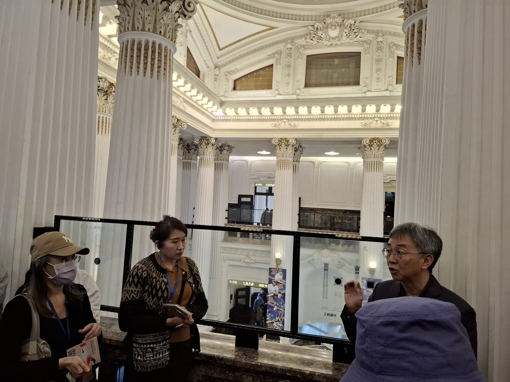
14:16｜臺博館二樓中央大廳迴廊為什麼「人造大理石」反而比天然石材更貴重？
這是走進現場才能親手驗證的彩蛋：大廳兩側牆面看似相同，實際用手一摸，一邊冰涼刺骨，是當年從日本岐阜縣進口的天然岡崎大理石；另一邊觸感明顯偏溫，竟然是以石膏揉入鐵骨料製成的「人造大理石」（scagliola）——手法就像做翻糖蛋糕，把不同顏色的石膏揉在一起模擬石紋，絕非表面畫上去的。
1915 年適逢第一次世界大戰爆發，天然石材昂貴，總督府在預算限制下只得採「半真半假」的折衷工法。沒想到一百一十年過去，當年為了省錢的替代工藝如今在臺灣幾近失傳，過去甚至曾有修復案找來留歐畫師用筆「畫」假石紋而修錯方向。時空翻轉，材料昔貴今賤、人工昔賤今貴，人造大理石的保存難度與稀缺價值，反倒高過了真石頭。
導覽開頭發下的展覽折頁主視覺，表面看來像一幅繽紛的抽象幾何構成，實則每一個圓圈、弧線、方格與八角形，全都直接取自展場內展出的 14 件漢寶德建築作品——從土銀中壢分行的圓窗、東海建築系館的四分之一圓陽台，到中研院民族所的葫蘆裝飾，像一張藏寶圖般等著觀眾在展間裡一一對號入座。
6,200 張手繪圖說與跨界人生：從山東少年到國策顧問
一個以人類學、動物學、植物學與地球科學為核心的自然史博物館，為什麼要花十幾年蒐集建築設計圖？林一宏給了一個乾脆的答案：無論自然史還是建築學，臺博館紀錄的都是臺灣邁向現代化的軌跡。自推動「二次戰後臺灣現代建築圖說徵集數位化計畫」以來，館方已累積徵集近 60 位個人或團體、共約 14 萬件 1945 至 1990 年代的手繪建築圖說與文獻。
其中最重量級的一批，便是 2008 年漢寶德先生生前親自捐贈給臺博館的 6,200 餘張建築圖說（涵蓋約 220 多件委託案），經過十餘年數位化掃描與整理，終於在漢先生逝世十周年之際，化為這場特展的骨幹。
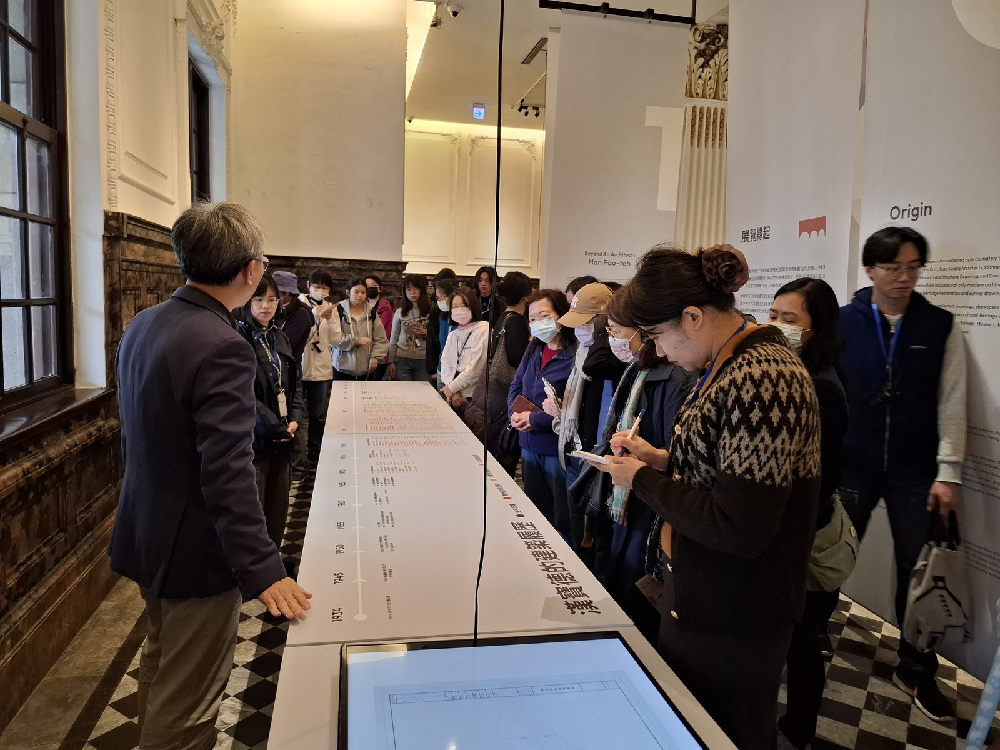
14:20｜1934–2014 年表長桌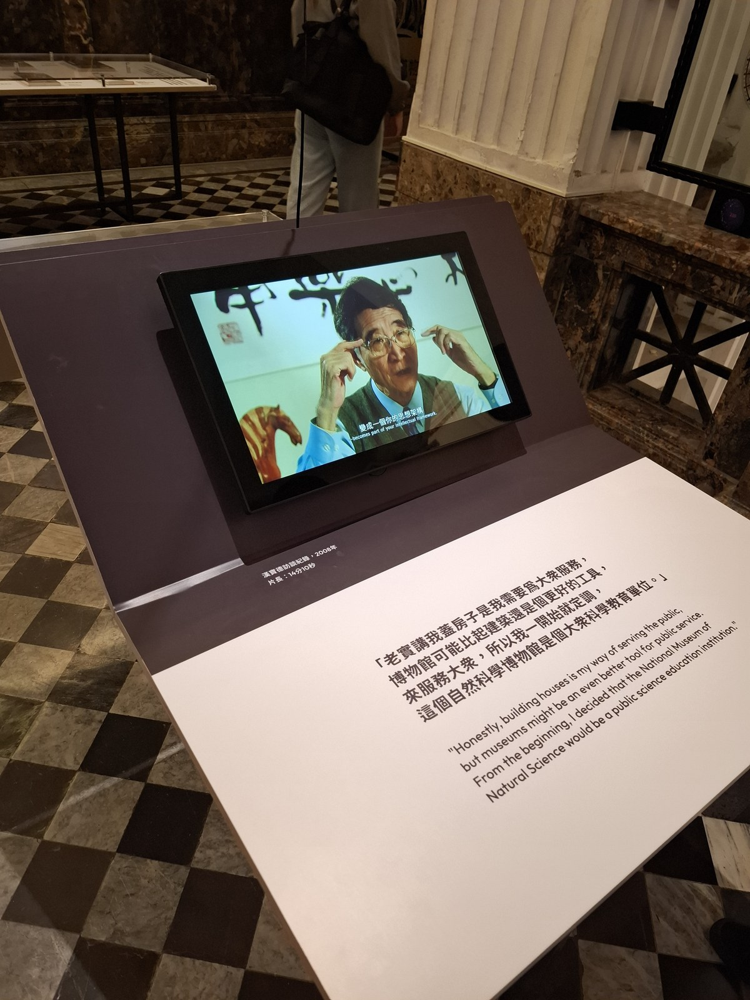
15:40｜2008 年珍貴訪談影像因肺結核自學英文、為了追隨偶像轉赴東海
站在 1934 至 2014 年的生平長桌前，林一宏把建築史講成了鮮活的人物誌：1934 年生於山東的漢寶德，戰後隨家人經澎湖來臺，1952 年考入臺南工學院建築系（今成功大學）——當時全臺高等建築教育僅此大學一脈與北部的臺北工專。有趣的是，漢寶德原本的第一志願其實是當文學家；大學期間又因罹患肺結核休學靜養，反倒在病榻上靠讀英文報紙練就過人外語能力，並因病免役留校任助教。
至於為何沒有留在母校成大，而是在 1960 年轉赴剛創校不久的東海大學？林一宏笑言，年輕人總是追隨偶像——就像自己當年也模仿恩師喻肇青的穿著與談吐，漢寶德當年正是衝著東海建築系主任陳其寬而去。隨後他赴哈佛大學攻讀建築碩士、普林斯頓大學取得藝術碩士，博士還沒唸完就被東海校長請回臺灣接任系主任，展開徹底翻轉臺灣建築教育的改革。
大二、大三便主編學生刊物《百葉窗》，日後接連創辦《建築與計劃》、《境與象》，以翻譯與評論推動「建築報國」。
一手籌建臺中自然科學博物館後，反過來為省博總體檢，並參與臺史博與世界宗教博物館籌備。
晚年致力推廣大眾美學與書法創作，是臺灣建築界少見同時具備設計、教育、文資與公共政策高度的跨界巨擘。
拆掉木桁架的 1995 論戰，與差點變身「臺北羅浮宮」的計畫
談起臺灣古蹟保存運動的源頭，林一宏先將時間線拉回 1919 年日本本土施行的《史蹟名勝天然紀念物保存法》（1922 年在臺施行，1933–1941 年間分五次指定史蹟名勝），戰後卻因政權更迭與經濟起飛而一度中斷。直到 1960 年代，臺北土地暴漲、老屋紛紛被拆，先有歷史學者林衡道以中華文化復興論述呼應官方，後有藝術家席德進、施翠峰從鄉愁與美感發聲；但光靠文史與畫家喊保留，房子還是會倒——真正扛起修護技術後盾的，正是 1971 年投入板橋林家花園調查的漢寶德。
當時的住宅短缺荒唐到什麼程度？1970 年代林家花園裡擠進超過一千名住戶；就連我們腳下的省博地下室，1950 年代也曾住著三戶、五十多位館員與家屬，「每天五點閉館後，地下室窗戶就冒出嫋嫋炊煙」。漢寶德與他所創立的漢光建築師事務所（取漢寶德之「漢」與合夥建築師潘友光之「光」），就這樣一邊蓋新建築，一邊在全臺各地修起老房子。
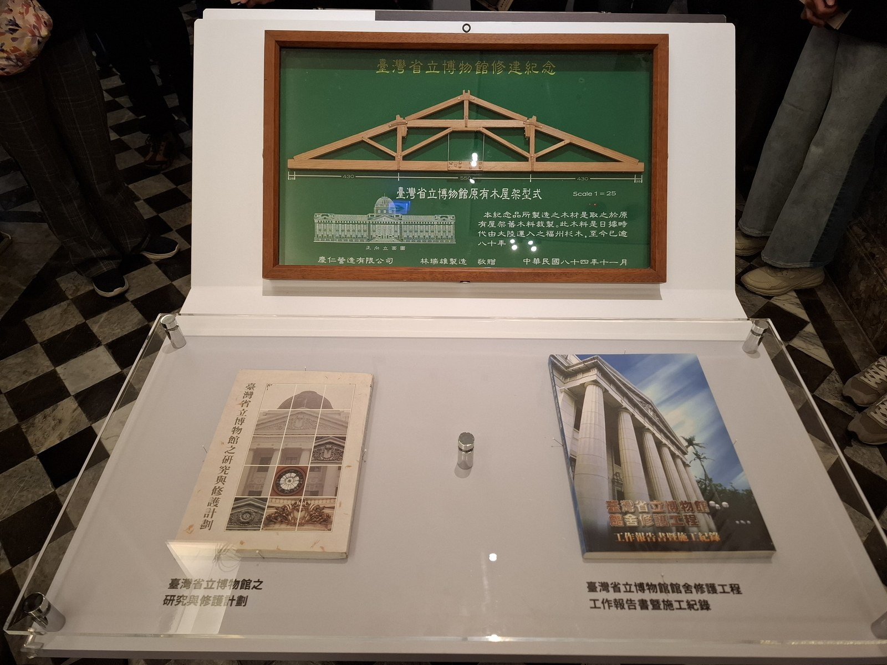
14:36｜木桁架模型與修護報告書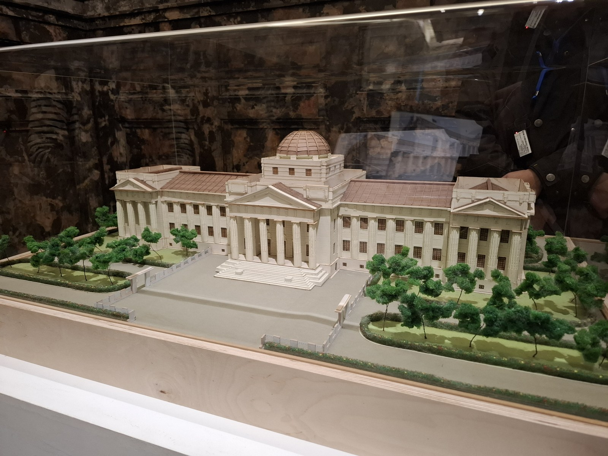
14:37｜三十年前的省博修護模型「有屋無地」的宿命，與跑在時代前面的屋架爭議
1991 年，漢寶德帶著科博館團隊回來為省博做總體檢，曾提出一個極具前瞻性的大膽構想：效法巴黎羅浮宮金字塔的「地下化」概念，將二二八公園地底下往下挖三層，串聯當時正在興建的捷運臺大醫院站，把教室、辦公與庫房全數移入地下，讓百年古蹟專心作展場。可惜計畫最終破局，原因無他——臺博館「有屋無地」，建築歸博物館，土地產權卻屬臺北市政府（至今每年仍須支付數百萬元租金），公園管理單位不同意，夢幻藍圖只能收進檔案櫃。
緊接著在 1994–1996 年的館舍修護工程中，更引爆臺灣文資界著名的「臺博屋架論戰」。兩側翼樓跨距超過 14 公尺的舊木桁架（日本進口杉木）因長期漏水與白蟻侵蝕，高達八成以上腐朽，且桁架密布導致閣樓無法使用。漢光團隊決定將其更換為 H 型鋼架，在不改變屋頂外觀高度的前提下，硬是多出一層展示空間，同時首度系統化地將現代消防、空調、機電與無障礙電梯整合進八十歲的老建築。
此舉當年遭夏鑄九、李乾朗等 27 位學者連署登報批判，認為減損古蹟價值。但回頭來看，臺博館直到 1998 年才正式指定為國定古蹟；漢寶德早在沒有文資法強制約束的年代，便以「建築是承載不同時代需求的容器」思考修復倫理——「如果真要修回 1915 年原貌，難道要撤掉冷氣、網路與抽水馬桶，點回五燭光電燈嗎？」這套邏輯，甚至比 1999 年強調保留各時期歷史層疊的《布拉憲章》（Burra Charter）還要早了好幾年。
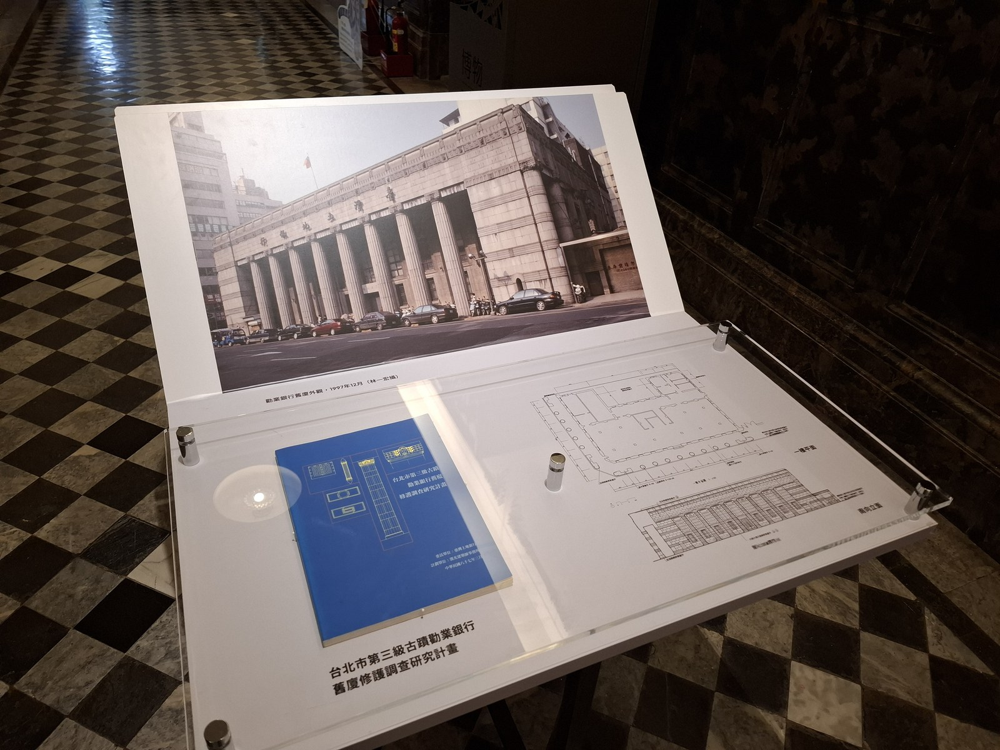
14:37｜勸業銀行舊廈（今土銀古生物館）白派、薄殼與青年活動中心：年輕建築師的理想國
走進第三展區「適當的幾何形」，時間回到 1960 至 1970 年代漢寶德剛從美國學成歸國、意氣風發的時期。受現代主義與歐美「白派」建築影響，他相信建築應背負永恆的價值，而圍塑空間最純粹的工具，就是圓、方、三角形與曲線等幾何形式。
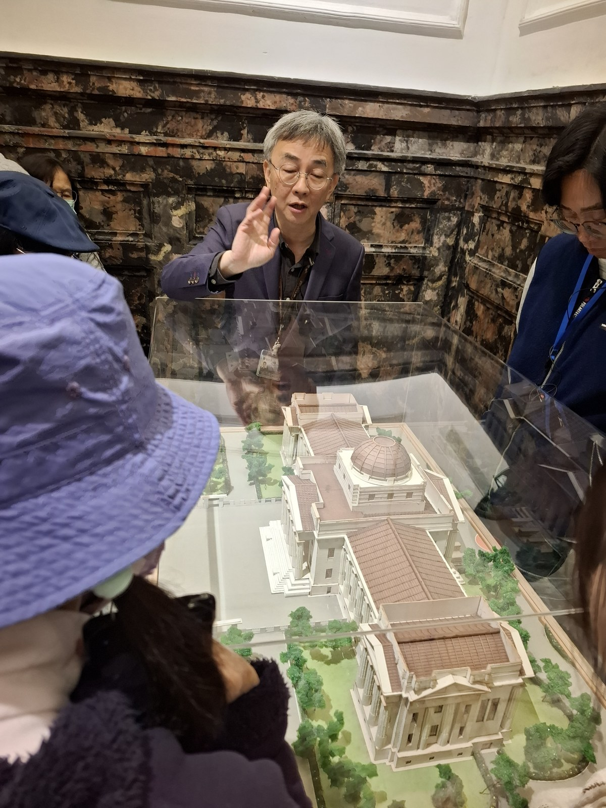
15:09｜高雄福音新村模型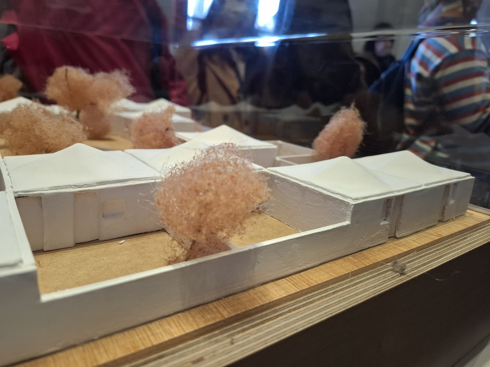
15:22｜土銀中壢分行（1971）中橫山莊、已拆除的 V 大樓，以及東海神聖的「評圖階梯」
除了住宅與銀行，漢寶德職業生涯中最具代表性的委託方之一，便是當年的救國團。憑藉學界聲望與李煥、宋時選等高層的信任，漢光事務所承接了多座青年活動中心。1972 年花蓮中橫上的洛韶山莊，透過現場製作的「炸開」模型，能清楚看見半圓、方體與切角三角形如何咬合出一座螺旋梯；林一宏笑著點評，這棟房子因地處偏遠、營造水準有限而「幾乎沒有細部」，卻無損它在漢氏幾何時期第一把交椅的地位（如今歸太魯閣國家公園管理，仍可依規定專案申請包棟入住）。
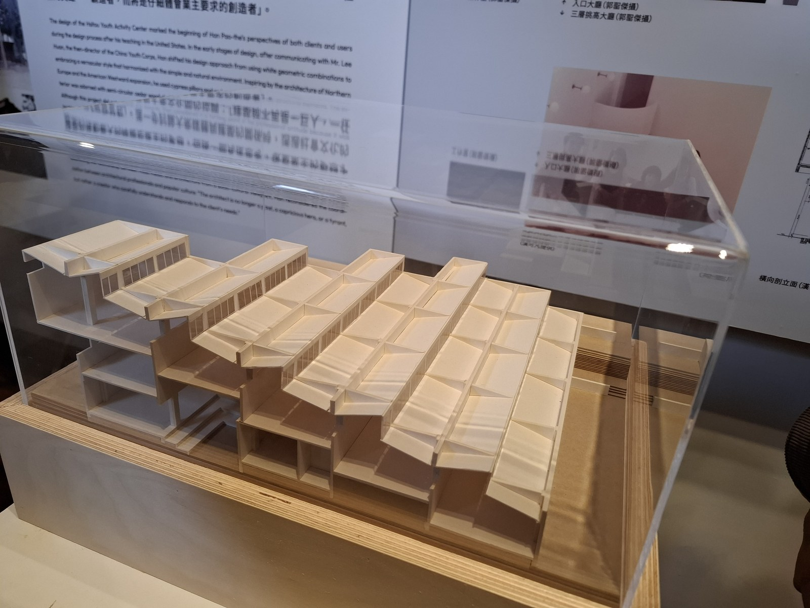
15:35｜東海視聽大樓（V 大樓）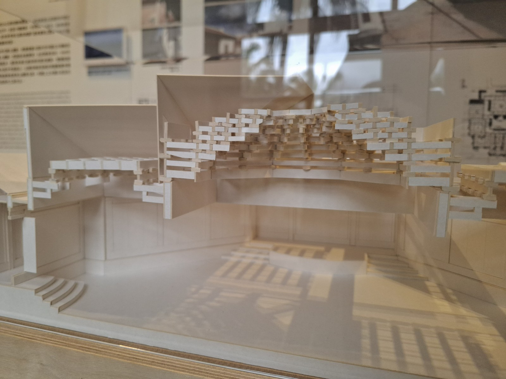
16:19｜東海大學建築系館在東海大學，漢寶德不只留下建築，更把美國帶回來的「評圖制度」刻進了新建築系館的骨子裡——貼圖、簡報、被師長與同儕質問到撕圖丟出窗外，全都在這座階梯空間上演。展場還藏了一張溫馨卻帶點烏龍的家族舊照：漢寶德與夫人蕭宗瑩女士（正巧是土地銀行董事長的女兒）及一雙兒女在四分之一圓陽台的合影，連漢先生晚年自己都記錯以為是天祥，其實全系列作品裡只有東海系館做了這個少見的四分之一圓！
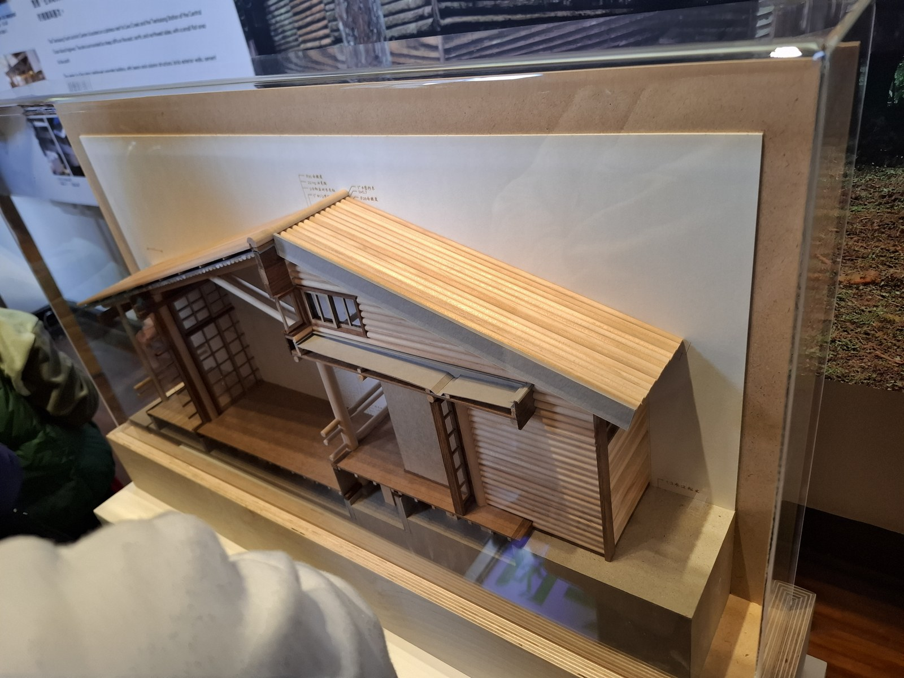
15:36｜溪頭青年活動中心剖面模型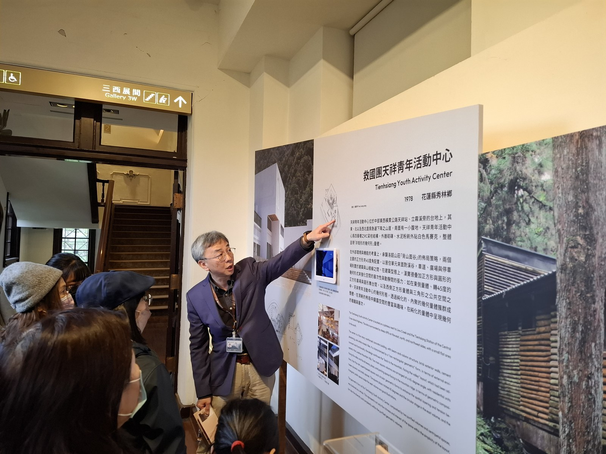
15:36｜天祥青年活動中心雅俗共賞的轉身：從金龍頭、民族所到南園與南藝大
1980 年代初，隨著 1982 年《文化資產保存法》公告施行，漢光建築師事務所長年投入全臺古蹟測繪與修護的養分，終於反過來滲透進新建築的創作之中。漢寶德在為恩師賀陳詞七十歲壽誕撰寫的論文集裡，首度提出「大乘的建築」——建築不像畫作可以捲起來收進倉庫，一旦蓋出來就必須面對社會大眾，因此不能只求建築師自己過癮或拿獎，而要做到最難的四個字：「雅俗共賞」。
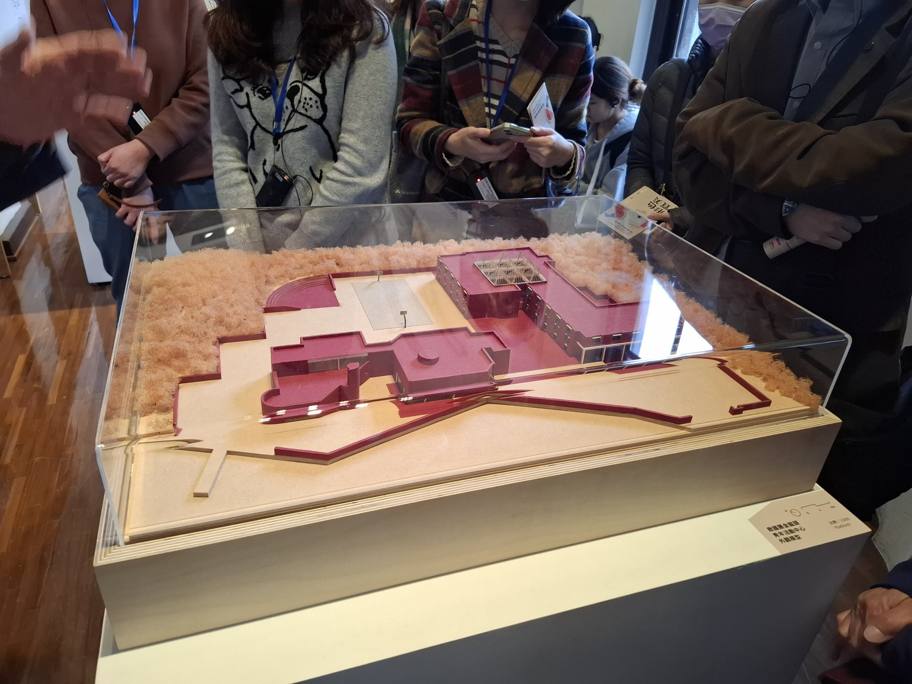
15:43｜澎湖金龍頭青年活動中心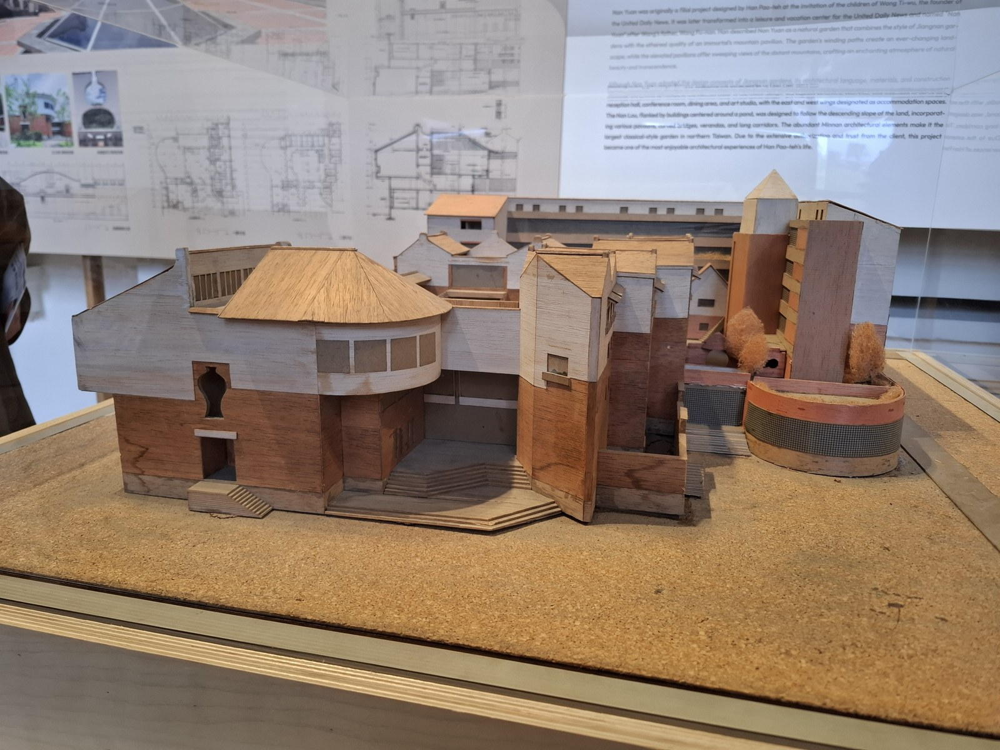
16:19｜中研院民族學研究所記憶裡的青春票價，與照片裡的建築偵探題
這個時期的作品總能精準勾起臺灣人的集體記憶：彰化縣立文化中心以傳統「金包玉」古厝牆面轉化當代立面；澎湖第二代的觀音亭青年活動中心（1984）將咾咕石、白灰牆與八角形大膽拼貼在高聳海崖上；而 1983 年的墾丁青年活動中心，更直接以鋼筋混凝土再現十座全臺知名傳統民居，並在四百人集會廳裡造出一座源自鹿港龍山寺的八角藻井。林一宏笑著分享一段私人往事：大一還沒去成功嶺前，他曾獨自騎單車環島來到墾丁，翻出當年留下的價目表發現「根本住不起」，最後只好睡在鵝鑾鼻燈塔的白色圍牆下露宿。
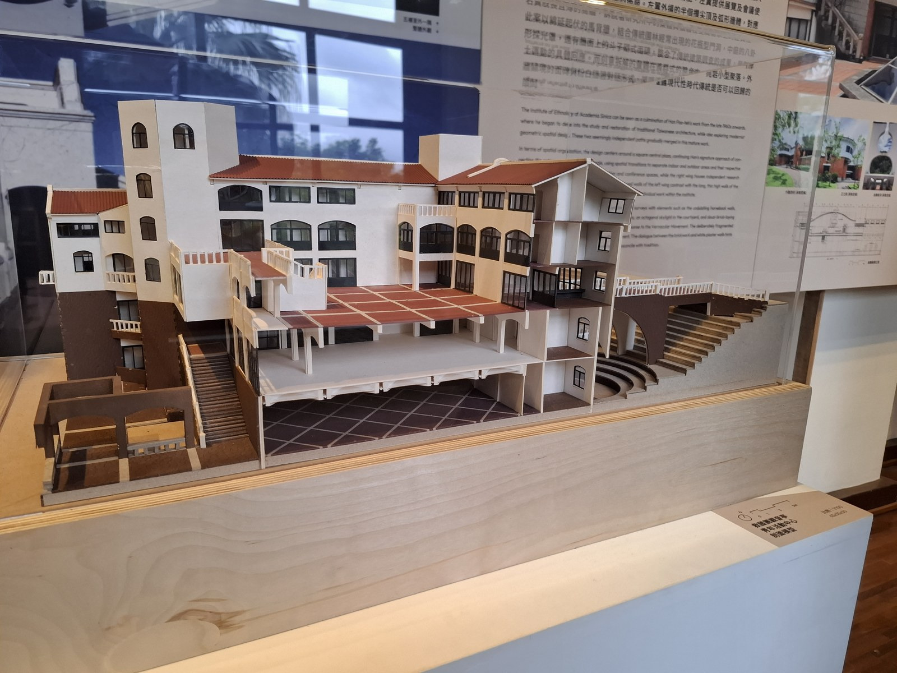
16:20｜墾丁青年活動中心（1983）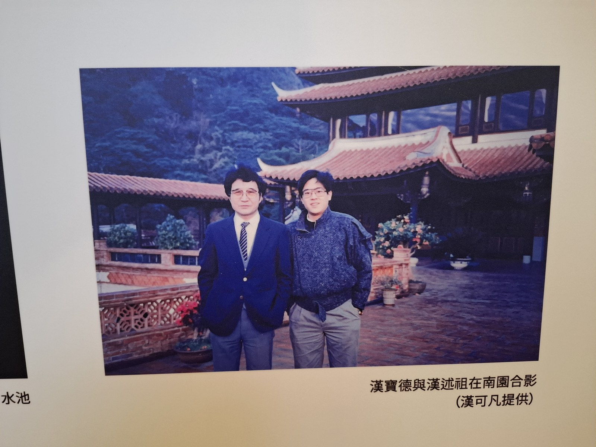
15:57｜新竹新埔南園舊影在漢寶德自己心中，「蓋得最愉快」的案子當屬 1985 年受《聯合報》創辦人王惕吾之託設計的新竹新埔南園——「愛怎麼蓋就怎麼蓋，預算不是問題」，遇到如此信任建築師的「天使業主」，成就了這座融合江南園林與閩南語彙的經典。而他建築生涯的最後一塊拼圖，則是受教育部之託在臺南官田臺糖土地上籌設臺南藝術學院（今臺南藝術大學）。在那個後來以「小橋流水」聞名的校園裡，漢寶德最初畫下的核心其實是象徵知識與美感起點的圖書館與藝廊；雖然日後姚仁喜接手校舍興建時有所調整，這份以「書與美」為本的辦學精神，仍長存於南藝大校園裡的漢寶德紀念館之中。
樓下沸騰的冠軍人潮，樓上靜謐的建築餘韻
兩個小時的導覽在熱絡的問答中步入尾聲。林一宏坦承，這檔展覽從未企圖「蓋棺論定」漢寶德在臺灣建築史上的地位；相反地，他邀請了一群四、五十歲的中壯代建築史研究者各自認領案例，像「以管窺豹」般，從各自求學的空間記憶與研究專長出發，完成一場跨時空的對話。
或許正因為如此，走完展場才驚覺：原來我們住過的山莊、走進的博物館、經過的銀行與校園，背後竟然都藏著同一雙手的痕跡。即使這場「形色質美」特展在兩天後便要卸下展板（隨後將移師臺南新營與南藝大續展），但只要下次走進臺博館大廳、忍不住伸手摸向那面溫熱的人造大理石牆時，漢寶德先生留給臺灣的形、色、質、美，就依然還在我們身邊。
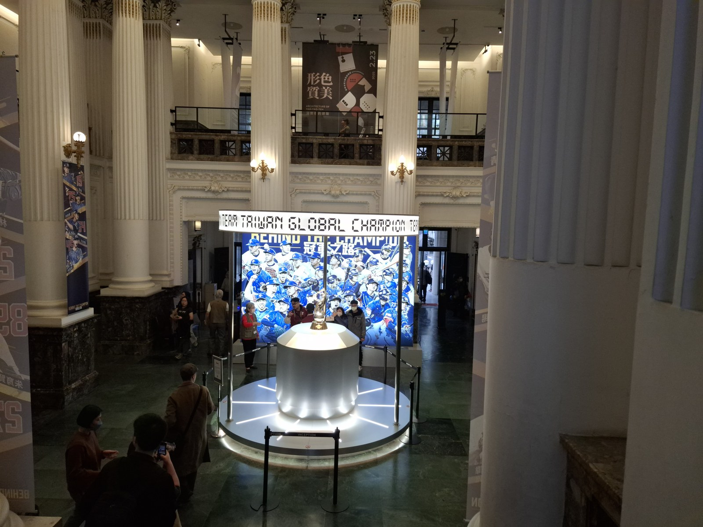
16:20｜二樓迴廊俯瞰一樓大廳- 「漢先生畫不畫施工圖？」——現場觀眾最常好奇的問題，林一宏的回答很直接：漢先生屬於概念型大師，總會親自畫下關鍵草圖（如天祥山莊的設計草圖），定調空間方向後便放手讓事務所團隊發展，如民族所的雲牆葫蘆正是由金門出身的傅弘仁建築師細心繪製。
- 只有這次看得到的驚喜：除了因 40 週年慶而無法隨展南下的民族所模型，還包括「2008 年訪談影像修復重現」與「東海 V 大樓實體模型」，讓這場倒數三天的週五午後更顯難得。